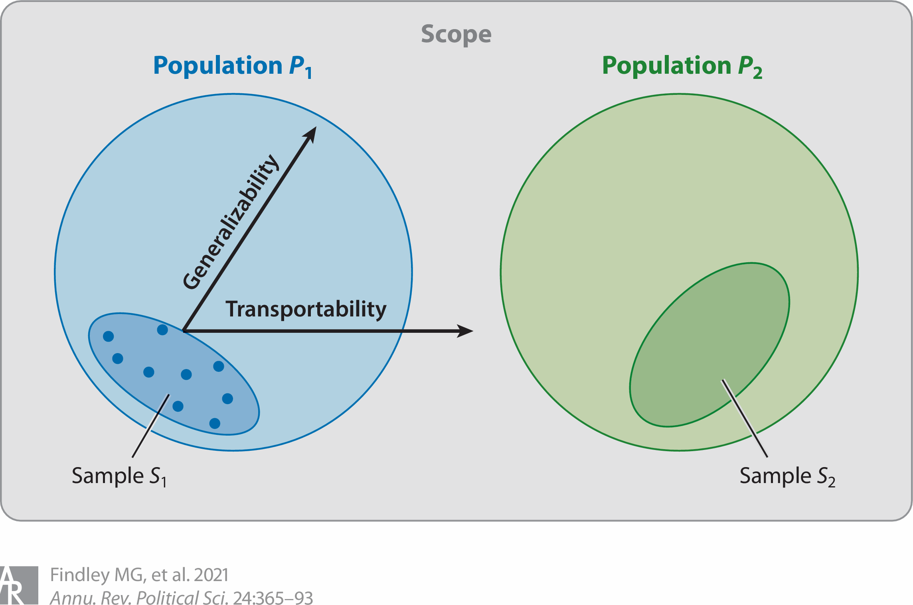

Findley MG, Kikuta K, Denly M. 2021. Annu. Rev. Polit. Sci. 24:365–93 https://doi.org/10.1146/annurev-polisci-041719-102556
2026/05/08
外的妥当性を内的妥当性の「対等なパートナー」にする
一般化可能性と移転可能性の区別，M-STOUTフレームワークの提示
外的妥当性を評価するための3つの基準の提示：
モデルの有用性，スコープの妥当性，特定の信頼性
統計的結論の妥当性（statistical conclusion validity）
構成概念妥当性（construct validity）

Fig 1. The difference between scope, populations, and samples
スコープ（scope）
理論や議論の適用可能性と限界
母集団（population）
理論的母集団（theoretical population）
メカニズムが適用されると想定される抽象的な対象群
アクセス可能な母集団（accessible population）
実際に標本抽出枠として利用可能な対象群
従来のUTOS（units, treatments, outcomes, settings）にメカニズム（M）と時間（T）を追加
M (mechanisms / メカニズム)
因果関係がSTOUTのあいだをどのように機能するか
（狭義では，処置とアウトカムをつなぐ媒介要因）
S (settings / セッティング)
実験室，国，村など，データが生成された環境
T (treatments / 処置)
独立変数の操作化
O (outcomes / アウトカム)
従属変数の操作化
U (units / ユニット)
個人，世帯，国家などの分析単位
T (time / 時間)
過去の知見が未来の状態に適用できるか
\[ \begin{align*} \hat{\delta}_S = \delta_P + b_{S1} + b_{S2} + b_P + b_V \end{align*} \]
逆に言えば，\(b_{S1} = b_{S2} = 0\) であれば内的に妥当であり，標本平均処置効果（SATE）が不偏推定される
settings (S), units (U), and time (T)
関心のある変数のPATE/TATE と 手持ちの変数のPATE/TATE の差
treatments (T) and outcomes (O)
完璧な実験研究（内的妥当性↑／外的妥当性↓）
代表性のある観察研究（内的妥当性↓／外的妥当性↑）
どちらがより母集団の真の値（PATE）に近い推定値を出せるかはケースバイケースであり，実験が常に優位であるとは限らない
標本または研究の統合から導き出される推論を体系化するモデルの有用性
研究の標本次元およびそれに対応する母集団が，どの程度妥当に選定・構築されているか
理論的および実証的手法が，関心のある理論的母集団に関する根拠のある推論をどの程度提供しているか
メカニズムがほかの文脈でも機能するかを問うべき
とくにINUS条件（それ自体は不十分だが，ある十分な条件の一部として必要な条件）が重要
メカニズムをどの程度の抽象度でとらえるかが，ほかの事例への移転可能性を左右
理論的な母集団と，実際にアクセス可能な母集団を，STOUTの全次元において事前に定義
MがSTOUTの各次元とどう相互作用するか，文脈依存性の有無
理論とデザインにもとづく反証可能な基準の設定
DAG，構造モデル，重み付けの仮定
PATE/TATE ↔︎ SATE ↔︎ 研究から得られる推定対象との乖離
メタ分析で，M-STOUTのどの部分の変動を使うか